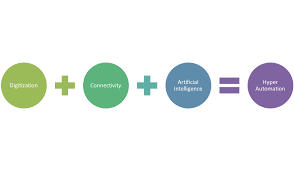
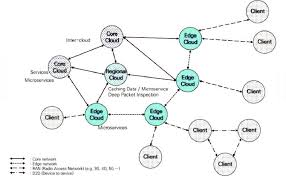

About Consulting
Unreal consultancy is the best consultancy firm around. We have the best workers.
We have unbeatable prices. Oisin Griffin is the CEO. We are based in county Kilkenny.
You can contact us through phone, social media or call into us.
We deal with clients in differetn areas such as the public sector, healthcare and in financial services.
Our consultant advise companies, organisations and corporations in their tough situations.
Hyperautomation
This deals with the application of advanced technologies, to increasingly automate processes
and augment humans. Hyperautomation brings together several components of process automation,
integrating tools and technologies that amplify the ability to automate work. It starts with
robotic process automation (RPA) at its core, and expands automation capability with artificial
intelligence (AI), process mining, analytics, and other advanced tools. The idea is to automate
more and more knowledge work, and engage everyone in an organization to be part of the transformation.
HyperautomationClick here for more

Multiexperience
A multi-experience development platform is adevelopment platform that is used for developing not just
mobile and web applications, but also chat, voice, augmented reality and wearable experiences. Multiexperience
is a concept pioneered by Gartner late in 2019. The concept is being championed as one of the biggest developments
for 2020. In fact, Gartner states that “more than 25% of the mobile apps, progressive web apps and conversational
apps at large enterprises will be built and/or run through a multiexperience development platform” by 2023.
In short, multiexperience is about adapting to the increasing market of different devices and their respective
experiences. Applications now need to run on different platforms and adapt easily, all while providing
a consistent experience from a business perspective. Why is this relevant? For one, it’s because a few companies
are already doing it and, for another, it’s because the average individual currently owns 3.2 different devices.
In other words, it’s becoming the increasingly expected norm.
Mutli-experience Click here for more
Distributed Cloud
Distributed Cloud is the application of cloud computing technologies to interconnect data and
applications served from multiple geographic locations. Distributed, in an information technology context,
means that something is shared among systems.Distributed cloud is the application of cloud computing
technologies to interconnect data and applications served from multiple geographic locations.
Distributed, in an information technology (IT) context, means that something is shared among multiple systems
which may also be in different locations. Distributed cloud speeds communications for global services and
enables more responsive communications for specific regions.
Distributed CloudClick here for more
